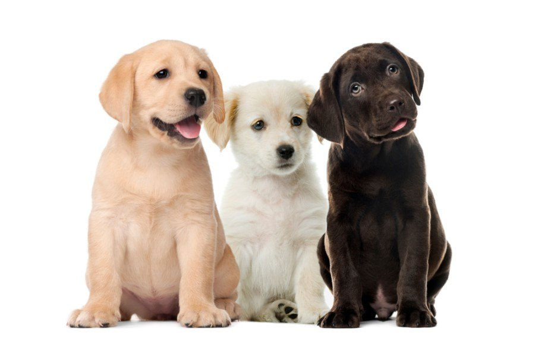
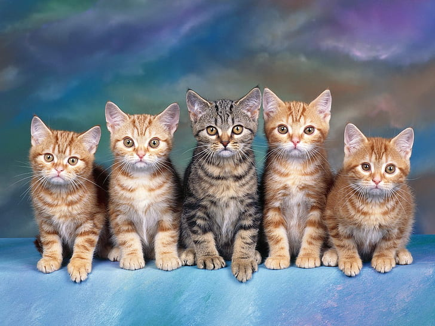

Az állatok világnapját 1931 óta ünnepelik minden esztendőben Szent Ferenc emléknapján, október 4-én. Azért lett a kiválasztott nap, mert ez Assisi Szent Ferenc halálának napja, egyúttal emléknapja is. Ez a nap tisztelgés az állatok védőszentje, Assisi Szent Ferenc előtt, aki már a 13. század elején azt hirdette, hogy mindent szeretnünk kell, ami körülvesz minket, legyen az élő vagy élettelen. Az állatok világnapjának alapelve, hogy az állatok boldogabbá teszik életünket, segítőtársként és barátként gazdagítják mindennapjainkat. Az ünnep célja, hogy az ember és állat közötti barátságot erősítse, valamint felhívja a figyelmet az együttélés fontosságára. Ennek szellemében az év minden napján arra törekszünk, hogy lehetőségeinkhez képest minél több állatot megmentsünk és igyekezzünk számukra boldog életet biztosítani. Az Alapítvány ehhez a tevékenységhez minden apró segítséget köszönettel fogad.
„ A kutyák beszélnek, de csak azok számára, akik képesek meghallgatni őket. ” - Orhan Pamuk -
„ Egy nemzet nagysága és erkölcsi fejlettsége híven tükröződik abban, ahogyan az állatokkal bánik. ” - Mahatma Gandhi -
„ Ha egy macska úgy döntött, hogy szeret téged, nem sokat tehetsz ellene. ” - Katryna Smythe -